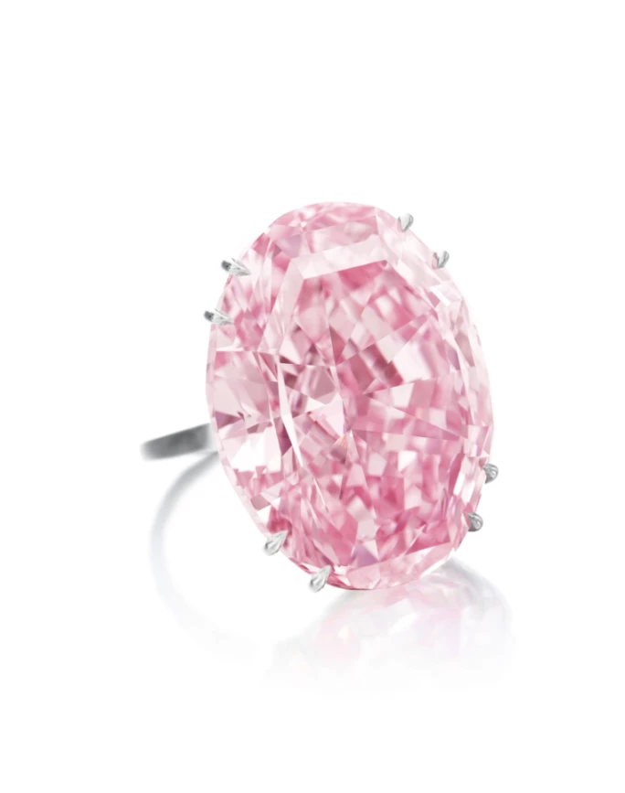
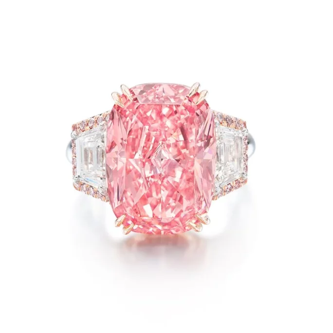
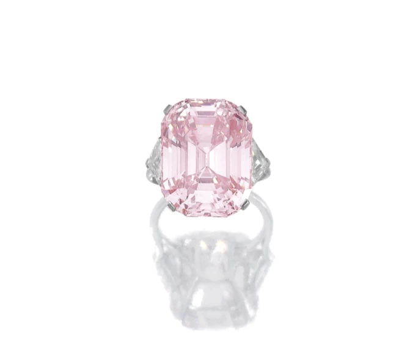
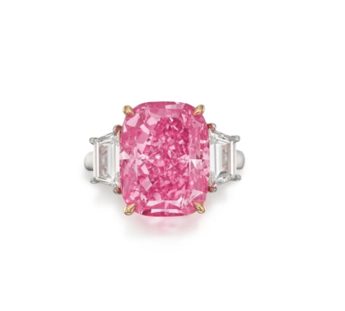
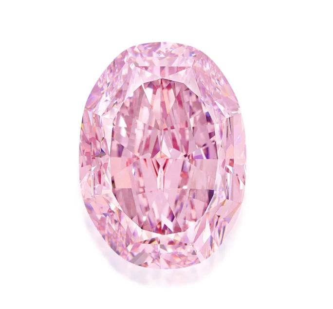

譯自 Lydia Dokko · Sotheby's
細說蘇富比拍賣史上成交價最高的五枚粉紅鑽石。
粉鑽簡史
粉鑽最早現蹤於 17 世紀初的印度，源自戈爾康達王國安得拉邦貢土爾地區的科魯爾。法國商人兼探險家讓·巴蒂斯特·塔維涅（Jean-Baptiste Tavernier）首次記述粉鑽之美。他在遊記中提及戈爾康達王朝大君在 1642 年向他展示了一顆重逾 200 克拉的巨型粉鑽。此鑽被命名為「The Great Table」，當時估值 60 萬盧比，迄今仍為史上最大粉鑽。
自 17 世紀初發現以來，巴西、南非、坦桑尼亞、加拿大、澳洲及俄羅斯皆有開採粉鑽。據考，如今全球 80% 粉鑽出自西澳金伯利的阿蓋爾礦區。這個礦場年產 2,000 萬克拉鑽石，當中只有 0.1% 被歸類為粉紅色鑽石，可見其稀有程度。2018 年，美國寶石研究院（GIA）研究千顆 2008 至 2016 年間評級的粉鑽，發現當中 83% 重量不足一克拉。
粉鑽何以珍稀？
有別於白鑽，粉鑽色澤源於形成過程中地質擾動。一般彩鑽色澤來自干擾碳晶形成的微量元素，例如氮生黃鑽，硼成藍鑽。然而，粉鑽獨特之處在於粉鑽並無微量元素，其粉色相信源於地底高溫高壓導致晶格扭曲，致使碳原子偏離原位，改變光線反射特性，呈現粉色。
一如其他彩色鑽石，GIA 以「微」、「微淡」、「淡」、「淡彩」、「彩」、「濃彩」與「豔彩」來劃分粉紅色鑽石的色彩，豔彩一如其名最鮮豔亮麗，自然最受青睞。2022 年 GIA 研究顯示，IIa 型粉鑽中僅 2% 評為艷彩粉紅。
梨形艷彩橙粉鑽「The Desert Rose Diamond」重達 31.68 克拉，便是此等稀世之作。此瑰寶於 2025 年 4 月 9 至 10 日在阿布扎比蘇富比「Beyond the World's Rarest Diamonds」展覽中展出。
1. 周大福粉紅之星｜553,037,500 港元

周大福粉紅之星
「周大福粉紅之星」為拍賣史上最昂貴的粉鑽，2017 年 4 月經香港蘇富比以 5 億 5,300 萬天價成交。此鑽重 59.60 克拉，橢圓形混合切割，為艷彩粉紅色，內部無瑕。「周大福粉紅之星」不僅由 GIA 評定為最大內部無瑕艷彩粉鑽，更獲得粉鑽最高色澤與淨度評級。此鑽源自戴比爾斯非洲礦區，1999 年發現時重達 132.5 克拉。經迪亞科爾（Diacore）工匠精心琢磨兩年，方成今日瑰姿。
2. 威廉姆森粉紅之星｜453,223,000 港元

威廉姆森粉紅之星
「威廉姆森粉紅之星」在 2022 年 10 月香港蘇富比以 4 億 5,300 萬港元成交，屬第二高價的粉紅鑽石。此 11.15 克拉枕形艷彩粉鑽，以 18K 玫瑰金與白金鑲嵌，內部無瑕，屬最純淨的 IIa 型鑽石。如此大克拉、純粹色調且完美淨度的粉鑽，可謂世間罕見。
1947 年 10 月，坦噶尼喀（今坦桑尼亞）姆瓦杜伊威廉姆森礦區的礦主約翰·威廉姆森博士發現此鑽原石，並將其獻予伊麗莎白二世作為婚禮賀禮。女王曾於 1961 年肯特公爵婚禮及 20 年後威爾斯親王大婚時佩戴此鑽胸針。神奇的是，威廉姆森礦區其後再無開採出粉鑽。
3. 格拉夫粉紅鑽｜45,442,500 瑞士法郎

格拉夫粉紅鑽
2010 年 11 月，「格拉夫粉紅鑽」於日內瓦蘇富比以 4 千 5 百 44 萬瑞士法郎成交，創下當時珠寶拍賣最高價紀錄。GIA 鑑定其經打磨後，是可能無瑕的 IIa 型粉鑽。此鑽本為紐約珠寶大師海瑞·溫斯頓（Harry Winston）所有，經勞倫斯·格拉夫（Laurence Graff）收購後重新打磨切割，更名為「格拉夫粉紅鑽」，現重 23.88 克拉，為天然艷彩粉紅內部無瑕 IIa 型鑽石。
4. 紅粉極星｜34,804,500 美元

紅粉極星粉鑽
2023 年 6 月，「紅粉極星」在紐約蘇富比以 3 千 480 萬美元成交。此 10.57 克拉艷彩紫粉鑽擁有內部無瑕品質，堪稱拍場最非凡粉鑽之一。其如紫紅花般的絢麗色調，有別於歷史名鑽的柔和粉色，即使經驗豐富的寶石專家亦為之傾倒。2020 年，此鑽在波札那丹沙礦區開採，經迪亞科爾精湛切工，完美展現其璀璨光芒與色彩。粉鑽本就罕稀，彩鑽中僅不足 5% 以粉色為主。如此濃郁紫粉色調向來源自如今已關閉的澳洲阿蓋爾礦區，使「紅粉極星」更顯珍貴。此鑽可謂大自然鬼斧神工與人類工藝的完美薈萃，實為拍賣史上最令人矚目的粉鑽之一。
5. 玫瑰花韻｜24,393,000 瑞士法郎

玫瑰花韻粉鑽
2020 年 11 月，「玫瑰花韻」在日內瓦蘇富比以 2,440 萬瑞士法郎成交。這顆 14.83 克拉艷彩紫粉紅色、內部無瑕的 IIa 型鑽石，由鑽石商埃羅莎在俄羅斯發現，時值「周大福粉紅之星」創下拍賣紀錄後數月。原石重 27.85 克拉，以俄羅斯傳奇芭蕾舞者兼編舞家命名為「尼金斯基」。成品以俄羅斯芭蕾舞劇《玫瑰花韻》為名，此劇曾風靡歐美，啟發藝術、時尚與珠寶設計。「玫瑰花韻」恰如其名，切工大師巧妙展現俄羅斯工藝之美，揭示寶石內蘊近乎魔幻般的光彩。